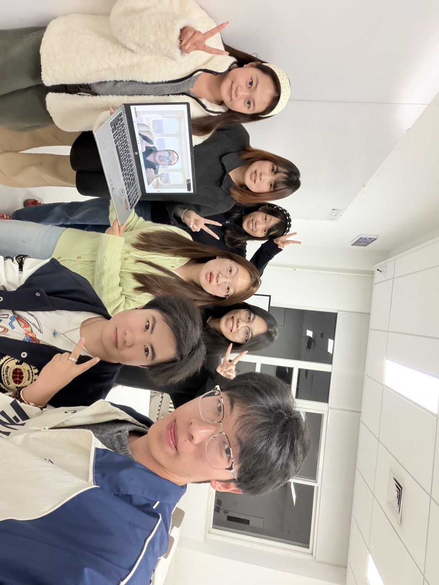
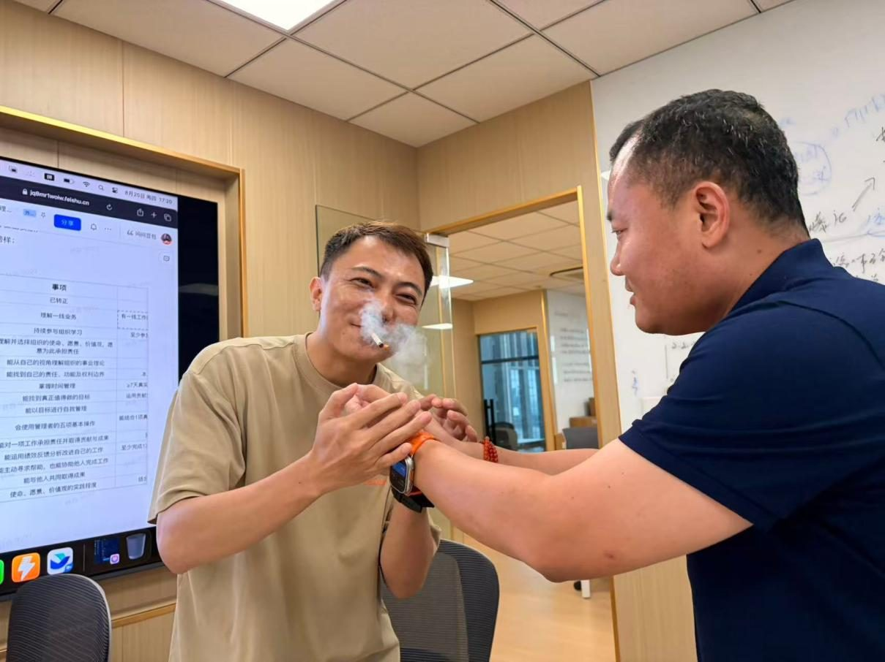
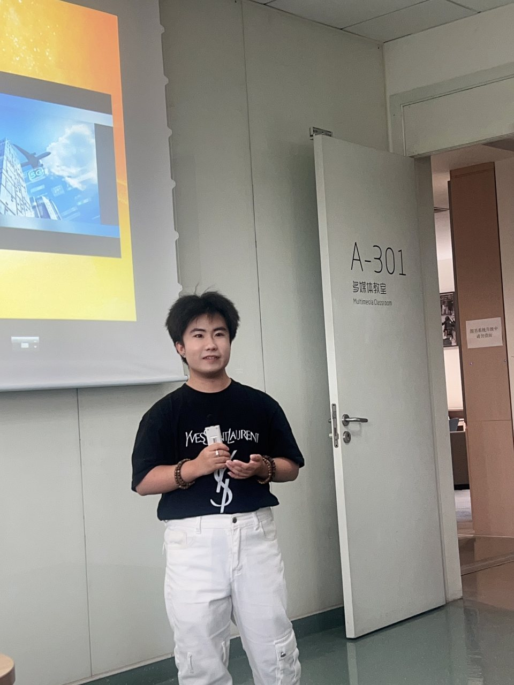
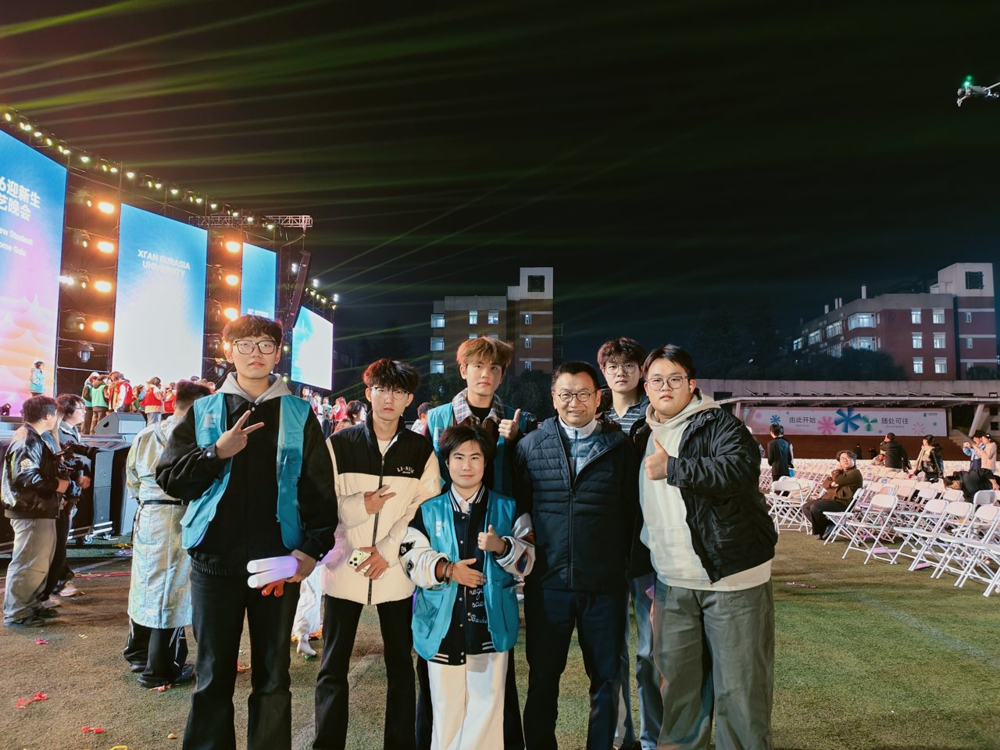
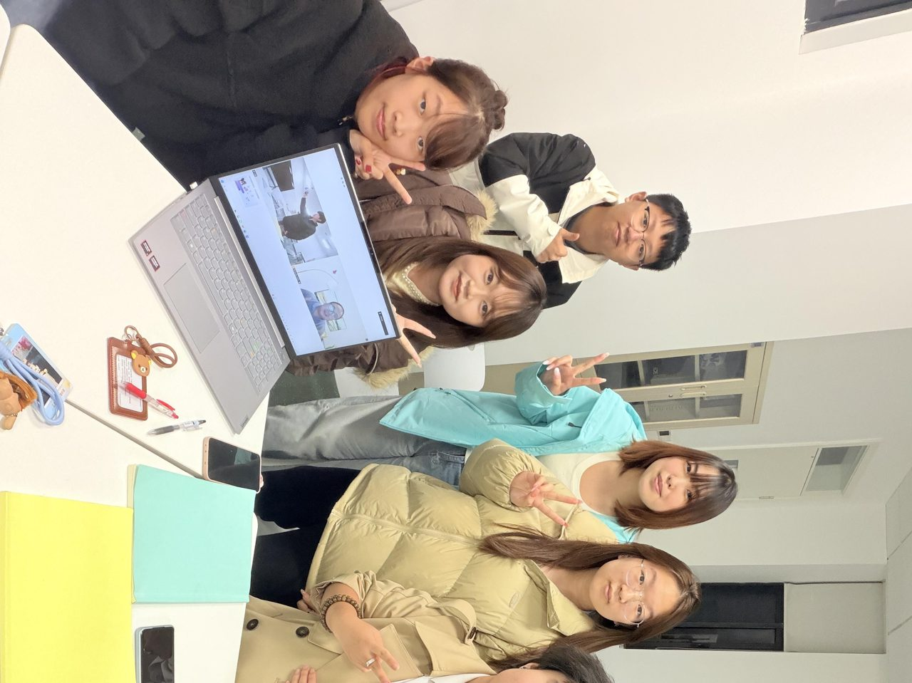

追光而行 · 光而不耀
推开那扇门
一束光穿过棱镜，回到本我——一个审计专业大二学生的自我管理练习
张仕宽 · 西安欧亚学院会计金融学院 审计学（统本审计 2503 班）
第一束光
推门而入
一束光射进来 · 2026 年 10 月 8 日 19:00 · 德鲁克书房 · 相约星期四素读会第九期
「棱镜拆光的前提是，你得先有光射进来。素读会就是那束光之一。」
点燃了我，再选一个不易起火的阴雨天。
「下一次星期四，我尽量还来。」
我是谁
镜折万光
光穿过棱镜，会折射成不同的颜色；人走过不同的场域，会留下不同的名字
统本审计 2503 班副班长 · 晨读助理 · 2026 年迎新导生
会计金融学院英语学习联络员
环球英语辩论社副社长 · 高考招生省外负责人
腾讯云 AI 校园大使 · 玻尔 AI4S 校园大使
挑战杯项目组长 · 学术英语海报展作品组长
全国大学生智能审计技能竞赛校队队员 · 审计专员 1
EI 会议论文第一作者 · 软件著作权共同著作权人
工审 Π 联合工作室运营 · 星火计划二期 · 素读会成员
能力越多，越要说清楚自己是谁。你到底要为谁，解决哪一个问题。
成绩单
积微成著
长处的外在证据 · 数字只报一遍
全国大学生商科综合能力大赛全国总决赛二等奖（微光队）
第七届外研社英语辩论新手赛二等奖 · 智能审计技能竞赛全国选拔赛二等奖
美国大学生数学建模竞赛（ICM）成功参赛奖 · 数维杯国际赛（IMCM）成功参赛奖
「融贯古今」翻译百科知识竞赛全国三等奖 · 全国高校大学英语听力大赛一等奖
「外研社 · 国才杯」地区复赛、全国决赛优秀志愿者
全国大学生数学建模竞赛陕西省一等奖（公示中，证书待下发）
校级优秀学生干部 · 国才杯校内选拔赛二等奖、季军 · 英语 Vlog 大赛最佳微光奖
英语晨读「晨读之星」（分院级）
分级统计
国际级 2 · 国家级 7
省级 1 · 校级 7 · 分院级 1
学术成果（与奖项分开）
EI 会议论文录用 · 第一作者（ICAICA 2026）
软件著作权《轴承与动力装备寿命统计预测软件》V1.0
班级集体荣誉另计：优秀晨读班级、最佳支持班级、班级 LOGO 设计大赛三等奖、优良学风班（2503 班集体）
转折
证外有光
「很多东西写不进简历，也加不了综测，但是它们已经融入我的生命里，组成现在勇敢的自己。」
—— @诸葛钢铁
软件著作权证书下来那天，我先想起的，是开学分享会上一个新生跑来说的话：
「学长，听你讲完，我敢报辩论了。」
证书是我自己的光，可它照不亮别人。比起这张证书，我更记得那句话。
如果生命是橘瓣脉络，苦涩而自得其所。
经历本身，即是答案。 · 荧火星光，也可以照亮。
我的长处
预期在先
一次真实的反馈分析 · 德鲁克《自我管理》
70 → 8
建了 70 人的微信群，做海报、转朋友圈，选《德鲁克导览》课的只有 8 个人
KK 老师点拨
「你一直在讲"卖点"，但没考虑过"买点"。」
换打法
不再填鸭式强推，潜移默化，让课程价值自己说话
「每当一个人在做出关键决策的时候，以及采取关键行动的时候，就写下自己预期会发生的结果。9 到 12 个月后，对照实际结果与当初预期进行反馈。」
反馈分析法 · 德鲁克《自我管理》
验出来的三条长处：把散的东西整合成成品 · 从外部识别需求 · 链接人，愿意给别人搭台
梅斯特五类业务开发：前两项解决被看见，后三项解决被信任——招课的转折，正落在这里 · 赛前没写预期的那次，215.4 分刷新分院纪录，却没晋级
我的价值观
揽镜自照
价值观是且应当是最终的检验标准 · 德鲁克《自我管理》
有一阵子，周五晚上 8 点才吃上那一天的第一顿饭，感冒刚好还在硬撑。
可欣：「看到伙伴的同时也要看到自己，自己的身体，这样才能更长久。」小杜的建议：做一些减法。
「我想在镜子里看到一个怎样的人？一个能看见伙伴也能看见自己的人，不把所有事都扛在身上。」
声誉不是广告，是一次次稳定的交付。 · 一想到我不会融化，周遭烈火便是锻造。
不做清单
一、不做纯整合、纯翻译、纯排版的免费兜底
二、不替朝令夕改的决策内耗
三、不再用"完美"绑架自己
先决定不做什么，做什么才有底气。
我属于哪里
蜕旧生新
重塑：把自己改变成和以往不同 · 《重塑个体》
| 靠声音大、覆盖广、冲得快，旧打法套到新事情上 | 先停下来问：这个位置真正需要我干什么 |
| 想做六边形战士，忙着补短板 | 把能量给长处；短处绕开，或交给更合适的伙伴 |
| 看到伙伴的稿子不到位，第一反应是"我来改吧" | 先交回作者，把判断还给作者 |
| 盯着没来的人，纠结为什么付出没有回报 | 看已经来的七八个人，先把在场的人照顾好 |
| 感冒发烧还硬撑，周五晚 8 点吃第一顿饭 | 给自己写下吃饭承诺，连续记录一周第一顿饭的时间 |
不要预测未来，而去创造未来。
经历的意义在于引导你，而非定义你。
我的贡献
谱分五彩
一束白光折成五道光谱，每一道光里，都站着一群人

学业之光
EI 论文第一作者、软件著作权共同著作权人
伙伴：KK、小杜、北北、西西、卢老师、月亮、子豪、可欣、小何、鸿洁、一荻、佳彬、小华、南南、Helen、范志德、高思语、刘之嘉、关悦、李何嘉琦、韩欣汝、紫昕、琪媛
竞赛之光
辩论社获外研社全国高校英语辩论社团认证；智能审计校队，12 月赴广东打总决赛
伙伴：徐梓芮（微光队）、智能审计校队队友、卢劲宇与胡波（数维杯队友）

国际之光
带剑桥交流生跑活动；一个拍脸的动作让我读懂，帮人要先经他人许可
伙伴：Patricia Ribca SALIM（模联代表团）、剑桥交流生与留学生伙伴

服务之光
晨读改革：把盯人催打卡，改成让大家自己选读什么、怎么读
伙伴：马怡清、安雨涵（2503 班班委）、晨读助理团队

志愿之光
2026 年迎新导生；迎新晚会连续四天守后台，宿舍四人全员在后台
伙伴：宿舍四位伙伴、迎新导生团队
「前面那四道光，最后都该折向同一个方向：去照亮别人。」
维系关系的责任
和而不同
西安欧亚学院校训 · 「不同」是独立判断，「和」是对话协商

星火共学现场（真实照片）
「一场好的共学，不是领读者一个人闪闪发光，而是他把光分给在场每一个人。」
北北：「一群人因为一个目的聚在一起，用自己的长处为别人的短处负责，这才是生态。」
一荻：「长处不是长在我身上的东西，是长在我和这件事、这群人的关系里的东西。」
让世界相遇，让不同的声音彼此看见。
一亩良田，万亩花开。各花各有各花香，找到属于自己的土壤，开出属于自己的花。
他人这面镜子
借镜观形
别人眼中的我 · 这一年，伙伴们替我做了一次反馈分析
「仕宽一定是第一个，最先看见伙伴的人。」
—— 贺一荻 · 2026 年 9 月 16 日共学整体回应
「他是真正愿意去帮助别人的人。」
—— 杜永光（小杜）· 同场共学
「很不一样的小伙子，思考很深。」
—— Helen · 第一次旁听之后
「仕宽需要的不是被看见，是被理解。」
—— KK · 2026 年 10 月 3 日共学
这些话不是我给自己贴的标签。自我的判断会骗人，伙伴的话不会。
还在路上
扎根今日
在盛大与渺小间，得以窥见自我
待补清单（自列）
☐ 系统的德鲁克知识：现在是碎片式读、分享式读，还没有每天读一篇、定期重复的节奏
☐ AI 工作台和知识库搭建：离用 AI 搭一个自己的工作台还差很远
☐ 时间记录：忙是忙，从来没认真记过时间花在哪
☐ 战略取舍的勇气：发现机会不难，难的是决定不做什么
「与其焦虑地追赶明天，不如像树一样把根扎进今天，相信时间的力量。静候花开，自有其时。是否能像一棵树一样，坚毅又盎然。」
清单上的四件事，没有一件是课堂能直接给的。教育的主体是人，剩下的路，要靠自己学。
万光归一
五道光谱，重新汇成一束白光
追寻光 · 靠近光 · 成为光 · 散发光
希望被记住什么？我的答案还在写：不在奖项清单里，在影响过谁的生命里。
「世界正在我眼前自行展开，我觉得我能去任何地方，做任何事情，成为任何人。」
「难过，但我不会停下。」
谢谢大家 · 张仕宽
1 / 13